Dynamische Netzwerkanalysen
Eine Einführung
Björn Siepe
AE Psychologische Methodenlehre, Philipps-Universität Marburg
1/3/23
Ziele
- Hintergrund von Netzwerkanalysen erarbeiten
- Den Sinn und die Struktur von Zeitreihendaten verstehen
- Dynamische Netzwerke interpretieren können
- Zentrale Annahmen und Einschränkungen erkennen
- Neuere Entwicklungen kennenlernen
Was wir auslassen
- Querschnittliche Netzwerke im Detail
- Planung von Längsschnittstudien
- Eigene Schätzung von Netzwerken in R (-> Followup?)
- N>1 dynamische Netzwerke im Detail
- Details klinischer Theorie (Process-Based Therapy, Case Formulizations etc.)
Netzwerkperspektive
Netzwerke
- Netzwerke bestehen aus Knoten (nodes) und Kanten (edges)
- Knoten:
- Personen, Städte, Maschinenteile, Symptome
- Kanten:
- gewichtet/ungewichtet
- direktional/undirektional
- In der Psychologie: erste Arbeiten ~2010
Netzwerke vs. traditionelle Vorstellungen
- Netzwerkmodell vs. Netzwerktheorie
- Netzwerktheorie:
- kausale Interaktion von Symptomen anstatt Syndrome
- keine monokausale Erklärung
- verschiedene Zustände des komplexen Systems (gesund vs. krank)
- stark verbundenes Symptome verstärken sich gegenseitig
Beispielnetzwerk

Symptomaktivierung
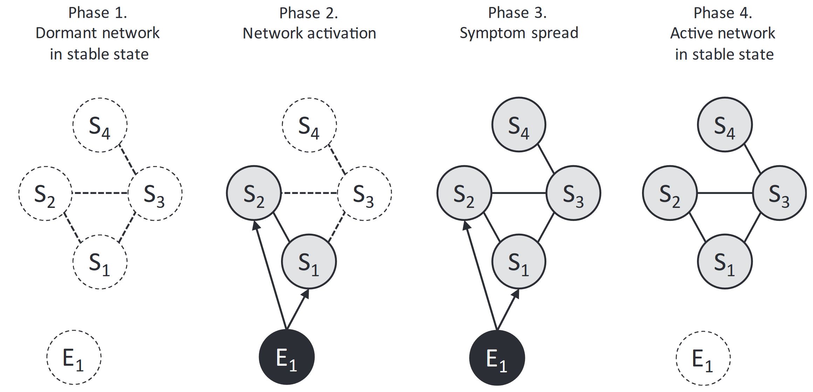
Komorbidität
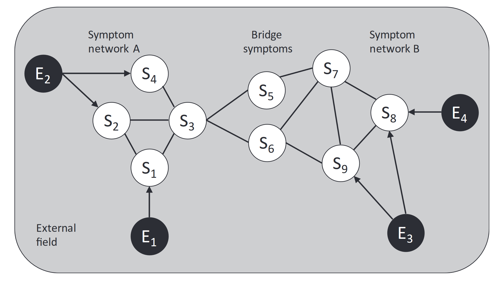
Small World

Zentralität
- Wichtigkeit eines Knotens
- Degree
- Anzahl der Verbindungen
- Strength
- Stärke der Verbindungen
- Betweenness
- Anzahl der Pfade
- Beispiel: Flughafen
- Idee: Ansatz für Interventionen?
- Interpretation teils fraglich
Zentralität
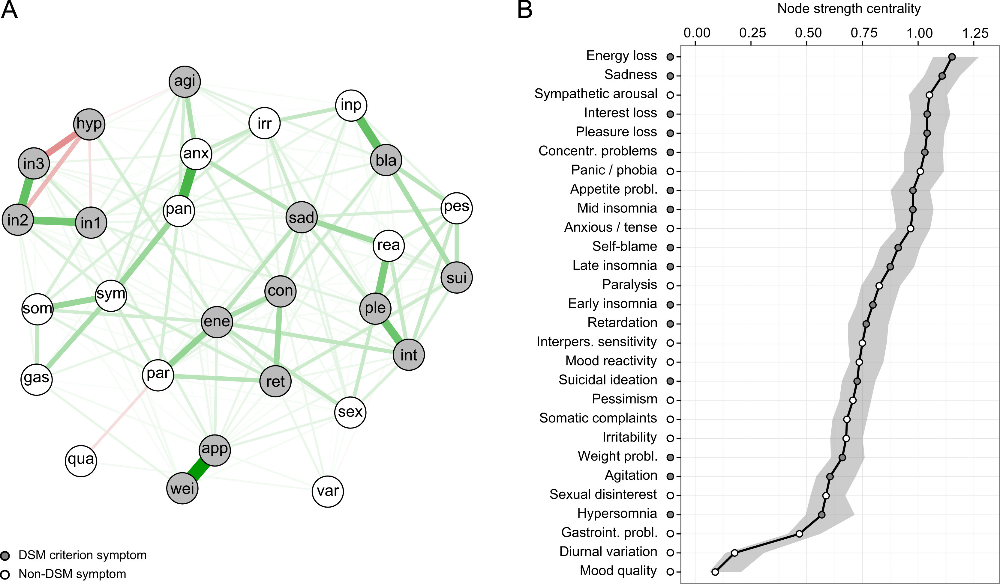
Hype Cycle

Warum Längsschnitt?
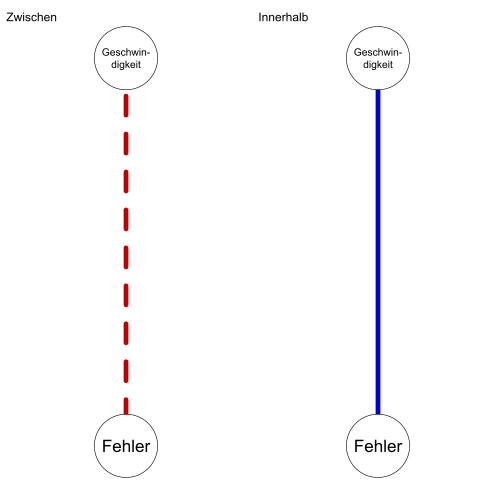
Dynamische Netzwerke
- dynamische Zusammenhänge innerhalb von Personen
- über Zeitpunkte hinweg
- Idiographie vs. Multilevel
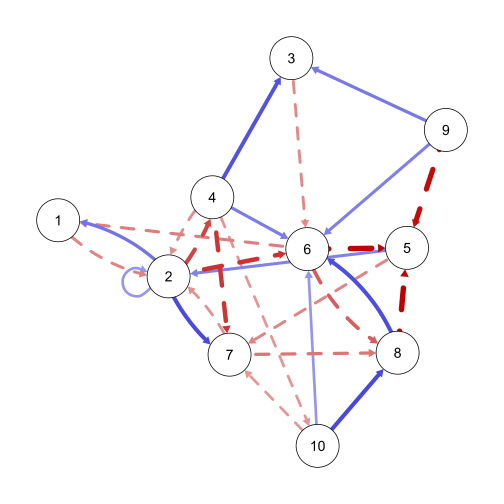
Zeitreihendaten
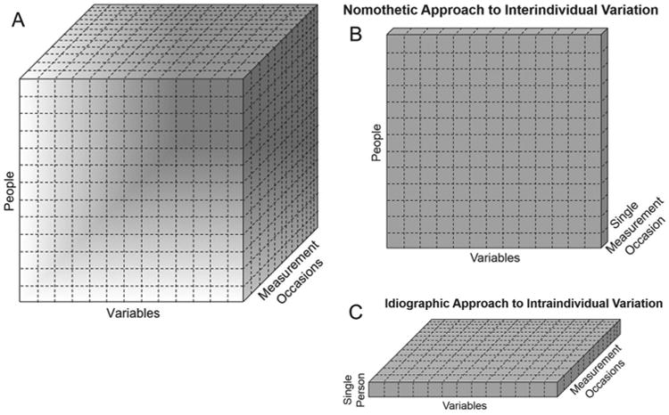
Experience Sampling

Autoregressiv
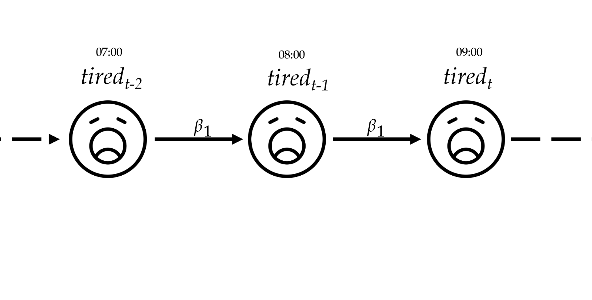
Autoregressiv
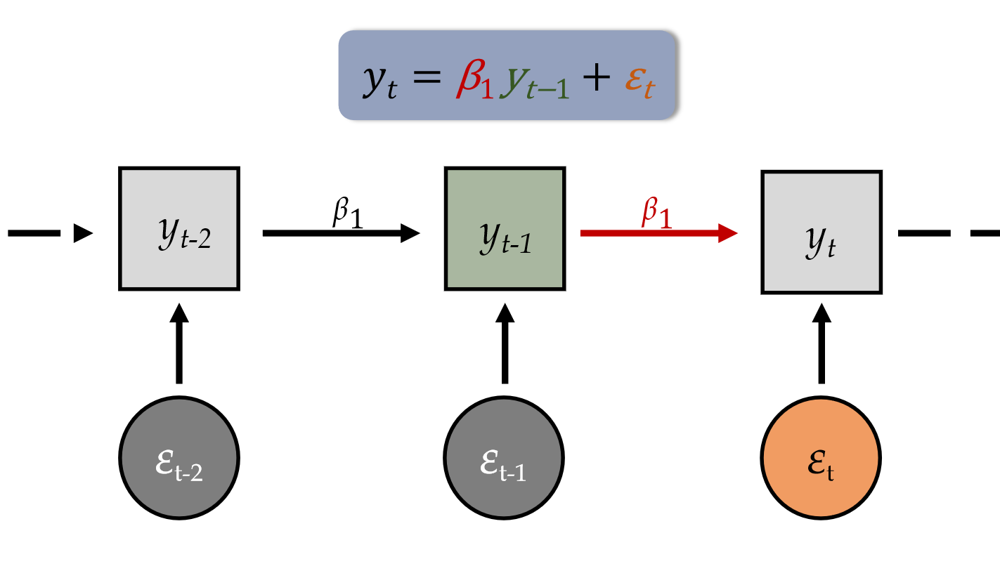
Cross-Lagged
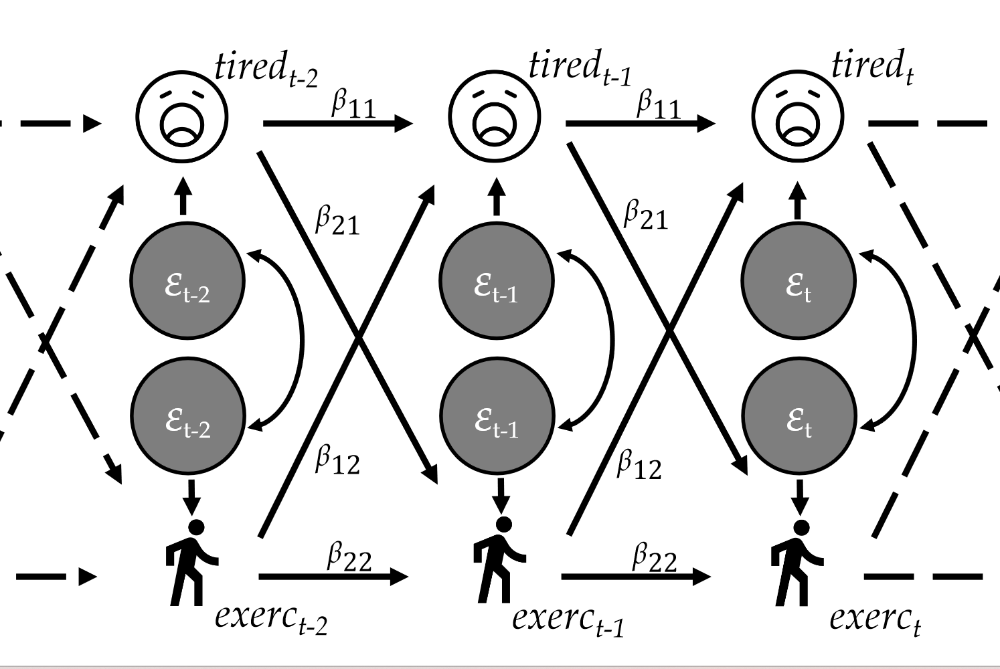
Schätzung idiographischer Netzwerke
\[ Tired_{t} = \beta_{11}*Tired_{t-1} + \beta_{12}*Activity_{t-1} + \epsilon_{t} \]
\[ Y_{t} = \boldsymbol{B} Y_{t-1} + \Sigma \]
- Residuen sind hier von zentraler Bedeutung!
- Regularisierung für Struktur
Auszeit

Zwischenfazit
- Netzwerke sind überall
- attraktive Alternative zur Konzeptualisierung von Psychopathologie
- Mittlerweile sehr viele Querschnittsstudien, wichtig Hype von tatsächlicher Aussage zu trennen
- Längsschnitt ermöglicht neue Einblicke
- Personalisierte Psychotherapie?
- verschiedene Schätzmethoden
Temporal Network
- Effekt von Variablen auf sich selbst und auf andere über die Zeit
- gerichtete Effekte
- meist: Lag 1 aus Sparsamkeit
- Granger Kausalität
- indikativ für mögliche Kausalität
- self-loops
Contemporaneous Network
- Partialkorrelation der Residuen
- ungerichtete Effekte, die temporales Netzwerk nicht einfängt
- etwa: Effekte, die schneller sind als Erhebungsfrequenz
- Beispiel: \[ Stress \rightarrow Erwartung Panik \rightarrow Angst \]
Beispiel: Epskamp et al. (2018)
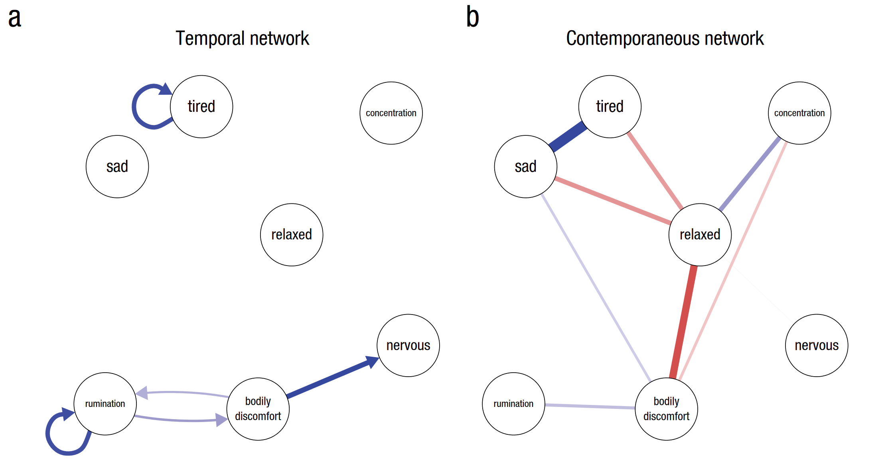
Multilevelnetzwerke
- Vorteile:
- mehr Power
- Betrachtung von Heterogenität
- weniger Zeitpunkte notwendig
- nicht ganz idiographisch
- mlVAR (Epskamp et al., 2018)
- GIMME (Beltz et al., 2016)
- DSEM (Asparouhov et al., 2018)
Ein Beispiel Multilevel
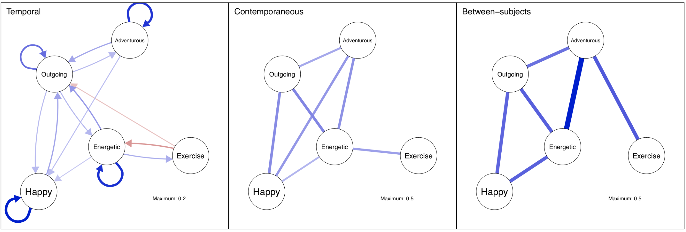
Interpretation
- gleiche Zeitabstände zwischen Messungen
- Alternative: Continuous Time
- Korrekte Zeitabstände für zu messende Konstrukte
- Stress vs. Depressivität
- Kausalität?
- Variablenauswahl?
Interpretation
- Stationaritätsannahme
- realistisch in klinischer Praxis?
- Stabilität idiographischer Netzwerkschätzungen
- Missing Data
- Verteilungsannahmen
- Power
- Absenz von Evidenz \(\neq\) Evidenz für Absenz
Stabilität der Schätzung
- Hoekstra Paper
- Wir klonen das “wahre” Netzwerk einer Person und rechnen Netzwerkanalysen
- Ergebnis: Heterogenität
- Interpretation?
- Schätzungsunsicherheit schwer zu verstehen
Machbarkeitsstudie Idiographie
- Anzahl Zeitpunkte?
- bei 75 und 100: schlechte Sensitivität
- Anzahl Variablen?
- bei wenigen Zeitpunkten: \(\leq\) 6
- Zeitliche Netzwerke besonders schwierig
Evidenz bei Einsatz in klinischer Praxis
- Frumkin et al. (2021):
- wenige Fallstudien
- Patient*innen überzeugter als Therapeut*innen
- Levinson et al. (2023):
- n = 79, Essstörungen
- Modulwahl anhand von Netzwerken
- Hall et al. (2022):
- Einzelfallstudie zu TheraNET
- Gutes Beispiel für detailliertes, netzwerkbasiertes Feedback
- scheinbar RCT geplant
- Keine eindeutige Evidenz
- viele unterschiedliche Möglichkeiten des Einsatzes
Neuere Entwicklungen
- Zusammenarbeit von Therapeut*in/Patient*in und Daten
- Veränderungen über die Zeit
- Vorhersage von Therapieergebnissen
PREMISE
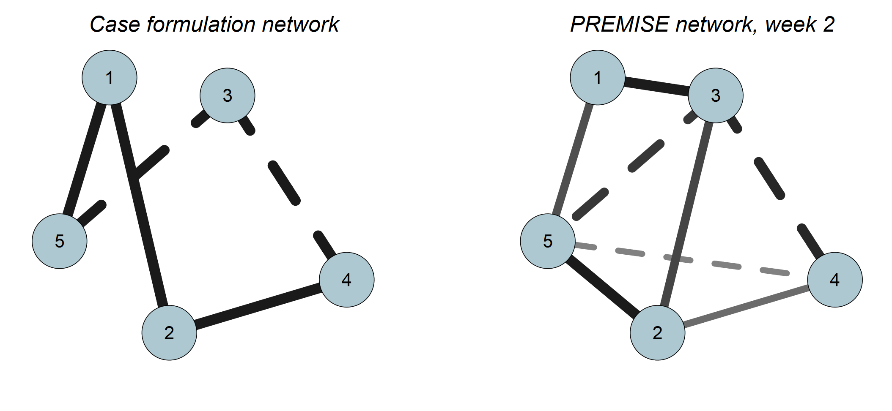
PECAN
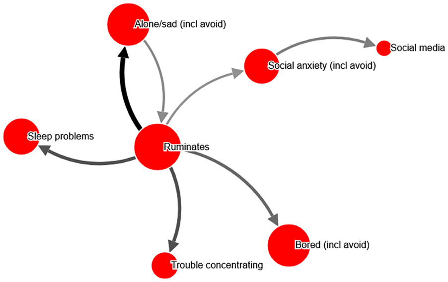
Zeitlich variierende Netzwerke
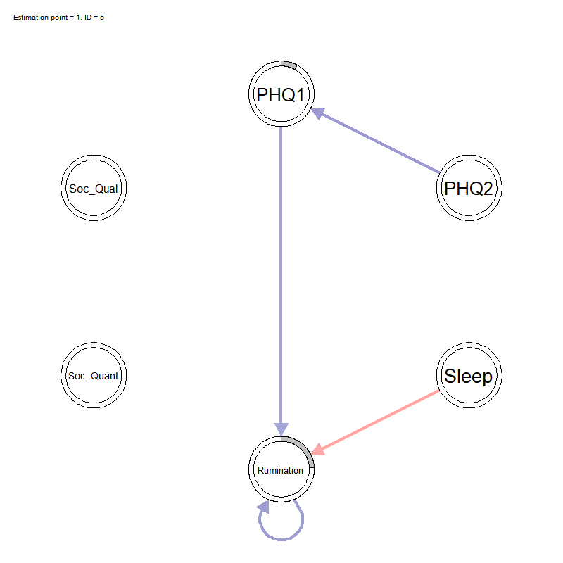
Vorhersage
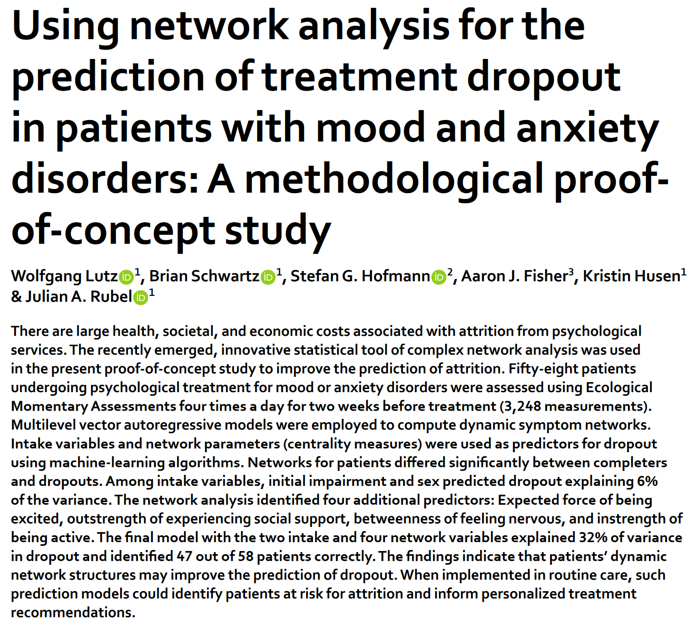
Welche Analysen?
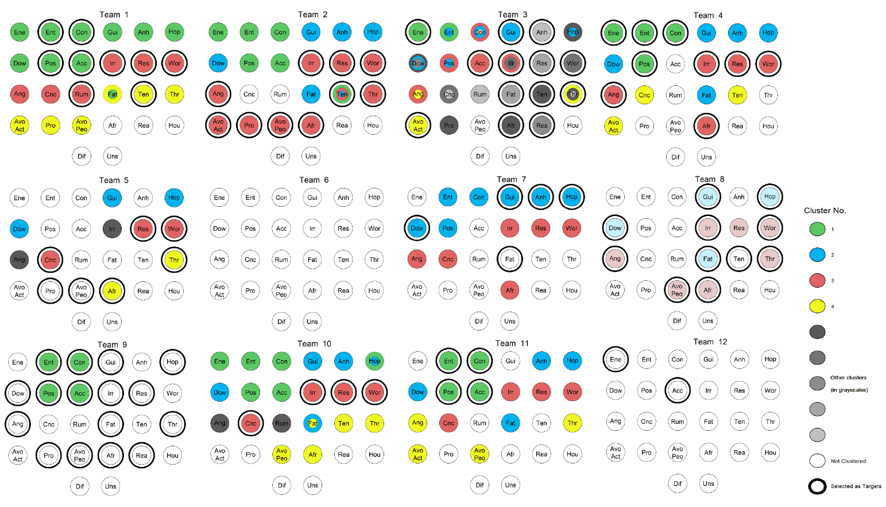
Ausblick
- Was ist die Zukunft von Netzwerken im klinischen Setting?
- “More than a pretty picture?”
- Stabilität über die Zeit
- Verknüpfung von datengetriebenen Modellen und Theorien
- Verschiedene Arten von Feedback für Zeitreihendaten, auch unabhängig von Netzwerken
Zusammenfassung
- Netzwerke sind konzeptuell attraktiv
- Längsschnitt gibt uns neue Informationen … aber auch neue Probleme
- Hohe Diversität in Netzwerkansätzen
- Fragen?
Kontakt
Ressourcen
PNAWS 2020 - frei zugänglich. Diente teils als Inspiration für diesen Workshop, besonders die Folien von Julian Burger.
Psych Networks Blog - nicht mehr aktiv
Literatur
Borsboom, D., & Cramer, A. O. J. (2013). Network analysis: An integrative approach to the structure of psychopathology. Annual Review of Clinical Psychology, 9(1), 91–121. https://doi.org/10.1146/annurev-clinpsy-050212-185608
Borsboom D. (2017). A network theory of mental disorders. World psychiatry : official journal of the World Psychiatric Association (WPA), 16(1), 5–13. https://doi.org/10.1002/wps.20375
Borsboom, D., Deserno, M. K., Rhemtulla, M., Epskamp, S., Fried, E. I., McNally, R. J., Robinaugh, D. J., Perugini, M., Dalege, J., Costantini, G., Isvoranu, A.-M., Wysocki, A. C., van Borkulo, C. D., van Bork, R., & Waldorp, L. J. (2021). Network analysis of multivariate data in psychological science. Nature Reviews Methods Primers, 1(1), 1–18. https://doi.org/10.1038/s43586-021-00055-w
Bringmann, L. F., Albers, C., Bockting, C., Borsboom, D., Ceulemans, E., Cramer, A., … & Wichers, M. (2022). Psychopathological networks: Theory, methods and practice. Behaviour Research and Therapy, 149, 104011.
Literatur
Dablander, F., Hinne, M. Node centrality measures are a poor substitute for causal inference. Sci Rep 9, 6846 (2019). https://doi.org/10.1038/s41598-019-43033-9
Fried, E.I., van Borkulo, C.D., Cramer, A.O.J. et al. Mental disorders as networks of problems: a review of recent insights. Soc Psychiatry Psychiatr Epidemiol 52, 1–10 (2017). https://doi.org/10.1007/s00127-016-1319-z
Fried, E. I., Epskamp, S., Nesse, R. M., Tuerlinckx, F., & Borsboom, D. (2016). What are ‘good’ depression symptoms? Comparing the centrality of DSM and non-DSM symptoms of depression in a network analysis. Journal of affective disorders, 189, 314–320. https://doi.org/10.1016/j.jad.2015.09.005
Literatur Längsschnitt
Asparouhov, T., Hamaker, E. L., & Muthén, B. (2018). Dynamic structural equation models. Structural Equation Modeling, 25(3), 359–388. https://doi.org/10.1080/10705511.2017.1406803
Beltz, A. M., Wright, A. G., Sprague, B. N., & Molenaar, P. C. (2016). Bridging the Nomothetic and Idiographic Approaches to the Analysis of Clinical Data. Assessment, 23(4), 447–458. https://doi.org/10.1177/1073191116648209
Burger, J., Epskamp, S., Veen, D. C. van der, Dablander, F., Schoevers, R. A., Fried, E. I., & Riese, H. (2021). A clinical PREMISE for personalized models: Towards a formal integration of case formulations and statistical networks. PsyArXiv. https://doi.org/10.31234/osf.io/bdrs7
Burger, J., Andikkhash, V., Jäger, N., Anderbro, T., Blanken, T., & Klintwall, L. (2022). A Novel Approach for Constructing Personalized Networks from Longitudinal Perceived Causal Relations. PsyArXiv. https://doi.org/10.31234/osf.io/e93xd
Literatur Längsschnitt
Burger, J., Ralph-Nearman, C., & Levinson, C. A. (2022). Integrating clinician and patient case conceptualization with momentary assessment data to construct idiographic networks: Moving toward personalized treatment for eating disorders. Behaviour Research and Therapy, 159, 104221. https://doi.org/10.1016/j.brat.2022.104221
Bringmann, L. F. (2021). Person-specific networks in psychopathology: Past, present and future. Current Opinion in Psychology, 41, 59–64. https://doi.org/10.1016/j.copsyc.2021.03.004
Epskamp, S., Waldorp, L. J., Mõttus, R., & Borsboom, D. (2018). The Gaussian graphical model in cross-sectional and time-series data. Multivariate behavioral research, 53(4), 453–480.
Frumkin, M. R., Piccirillo, M. L., Beck, E. D., Grossman, J. T., & Rodebaugh, T. L. (2021). Feasibility and utility of idiographic models in the clinic: a pilot study. Psychotherapy Research, 31(4), 520-534.
Literatur Längsschnitt
Haslbeck, J. M. B., Bringmann, L. F., & Waldorp, L. J. (2021). A tutorial on estimating time-varying vector autoregressive models. Multivariate Behavioral Research, 56(1), 120–149. https://doi.org/10.1080/00273171.2020.1743630
Hoekstra, R. H. A., Epskamp, S., & Borsboom, D. (2022). Heterogeneity in Individual Network Analysis: Reality or Illusion?. Multivariate behavioral research, 1–25. Advance online publication. https://doi.org/10.1080/00273171.2022.2128020
Jordan, D. G., Winer, E. S., & Salem, T. (2020). The current status of temporal network analysis for clinical science: Considerations as the paradigm shifts? Journal of Clinical Psychology, 76(9), 1591–1612. https://doi.org/10.1002/jclp.22957
Klintwall, L., Bellander, M., & Cervin, M. (2023). Perceived Causal Problem Networks: Reliability, Central Problems, and Clinical Utility for Depression. Assessment, 30(1), 73–83. https://doi.org/10.1177/10731911211039281
Literatur Längsschnitt
Levinson, C. A., Williams, B. M., Christian, C., Hunt, R. A., Keshishian, A. C., Brosof, L. C., Vanzhula, I. A., Davis, G. G., Brown, M. L., Bridges-Curry, Z., Sandoval-Araujo, L. E., & Ralph-Nearman, C. (2023). Personalizing eating disorder treatment using idiographic models: An open series trial. Journal of Consulting and Clinical Psychology, 91(1), 14–28. https://doi.org/10.1037/ccp0000785
Mansueto, A. C., Wiers, R. W., van Weert, J. C. M., Schouten, B. C., & Epskamp, S. (2022). Investigating the feasibility of idiographic network models. Psychological methods, 10.1037/met0000466. Advance online publication. https://doi.org/10.1037/met0000466
von Klipstein, L., Riese, H., van der Veen, D. C., Servaas, M. N., & Schoevers, R. A. (2020). Using person-specific networks in psychotherapy: Challenges, limitations, and how we could use them anyway. BMC Medicine, 18(1), 345. https://doi.org/10.1186/s12916-020-01818-0
Abbildungen
Jeremykemp at English Wikipedia (https://commons.wikimedia.org/wiki/File:Gartner_Hype_Cycle.svg), „Gartner Hype Cycle“, https://creativecommons.org/licenses/by-sa/3.0/legalcode
Foto von Jonas Leupe auf Unsplash